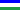

Museum Ladin Ursus ladinicus
Useful Information
| Location: | San Ćiascian (San Cassiano) |
| Open: |
26-DEC to Easter Thu, Fri, Sat 14-18. Easter to JUN Tue-Sat 10-18, Sun 14-18. JUL to AUG Mon, Tue 10-18, Wed 8:30-22:30, Thu-Sat 10-18, Sun 14-18. SEP to OCT Tue-Sat 10-18, Sun 14-18. [2011] |
| Fee: |
Adults EUR 8, Children (7-27) EUR 6.50, Children (0-6) free, Seniors (65+) EUR 6.50, Family (2+*) EUR 16. Groups (15+): Adults EUR 6.50, School Pupils EUR 2. Tickets valid for both museums. [2011] |
| Classification: |
 Cave and Karst Museum Cave and Karst Museum
|
| Light: |
 Incandescent Incandescent
|
| Dimension: | |
| Guided tours: | self guided |
| Photography: | |
| Accessibility: | |
| Bibliography: |
Gernot Rabeder ():
Die Höhlenbären der Conturines: Entdeckung und Erforschung einer Dolomitenhöhle in 2800 m Höhe,
Athesia Tappeiner Verlag, ISBN-10: 8870146294, ISBN-13: 978-8870146295.
|
| Address: |
Museum Ladin Ursus ladinicus, Strada Micurà de Rü 26, 39030 San Ćiascian (San Cassiano), Tel.: +39-0474-524020, Fax: +39-0474-524263.
E-mail: |
| As far as we know this information was accurate when it was published (see years in brackets), but may have changed since then. Please check rates and details directly with the companies in question if you need more recent info. |
|
History
| 1987 | Grotte Conturines discovered. |
| 30-JUL-2011 | opened to the public. |
Description
The Museum Ladin Ursus ladinicus is a rather new museum located in a Ladinia speaking side valley of the Pustertal. While Southern Tyrolia is quite popular with German and Italian tourists, this valley was a little off the main tourist flows. Not enough ski lifts and not enough famous mountains. But this museum was erected to create more infrastructure, and actually the museum alone makes the valley worth a visit. It is the only museum in the Italian Alps which is dedicated to the cave bear (Ursus spelaeus).
The story starts in 1987, when a mountain guide from San Ćiascian discovers a cave hiogh up on the mountain. The cave is hard to reach, only after several hours of walking, located at 2,750 m asl. He is quite impressed when he enters the cave and finds enormous piles of bear bones. For years the cave is the topic of scientific research, mostly by Prof. Rabeder from Vienna who is a specialist for Cave Bears. He soon discovers that the cave bear here differs from the other cave bears and a new sub-species is named, the Ursus ladinicus. Ladin is a Rhaeto-Romance language which is spoken in some valleys by approximately 30,000 people. It is officially recognized as a minority language in 54 Italian municipalities.
The cave was opened to the public, but because of the long hike to the cave the number of visitors is quite small. Then there was the idea to bring the cave to the valley, for all those who are not able to walk to the cave. That’s the birthday of the Museum Ladin Ursus ladinicus which is dedicated to the Conturines cave and its bears, but also to the cultural heritage of the Ladinian speaking people. It is a branch of the Ladin Museum in St. Martin in Thurn. The modern building was built to house the museum and has three levels. It is entered at the first floor, where ticket office, museum shop and toilets are located. The second floor has a geologic exhibition about the formation of the Alps and the Conturines cave. There is a documentation of the exploration of the cave. But the highlight is in the basement, which is a reconstruction of parts of the Conturines cave, complete with a detailed reproduction of a sleeping cave bear.
- See also
 Search Google for "Museum Ladin Ursus ladinicus"
Search Google for "Museum Ladin Ursus ladinicus" Google Earth Placemark
Google Earth Placemark Museum Ladin Ursus ladinicus, official website (visited: 06-OCT-2011)
Museum Ladin Ursus ladinicus, official website (visited: 06-OCT-2011)- Museum Ladin Ursus ladinicus | Museums | Guide to the museums | Department of Museums | Provincia autonoma di Bolzano - Alto Adige (visited: 06-OCT-2011)
- Le Museum Ladin Ursus ladinicus a San Ciascian é davert - YouTube (visited: 06-OCT-2011) ()
 Index
Index Topics
Topics Hierarchical
Hierarchical Countries
Countries Maps
Maps Search
Search